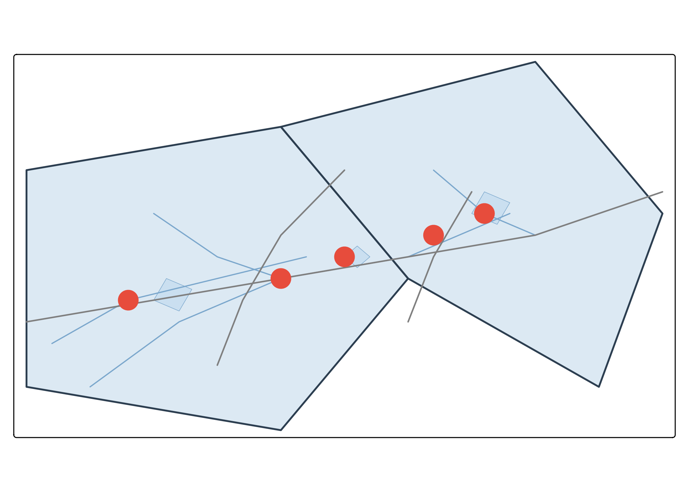
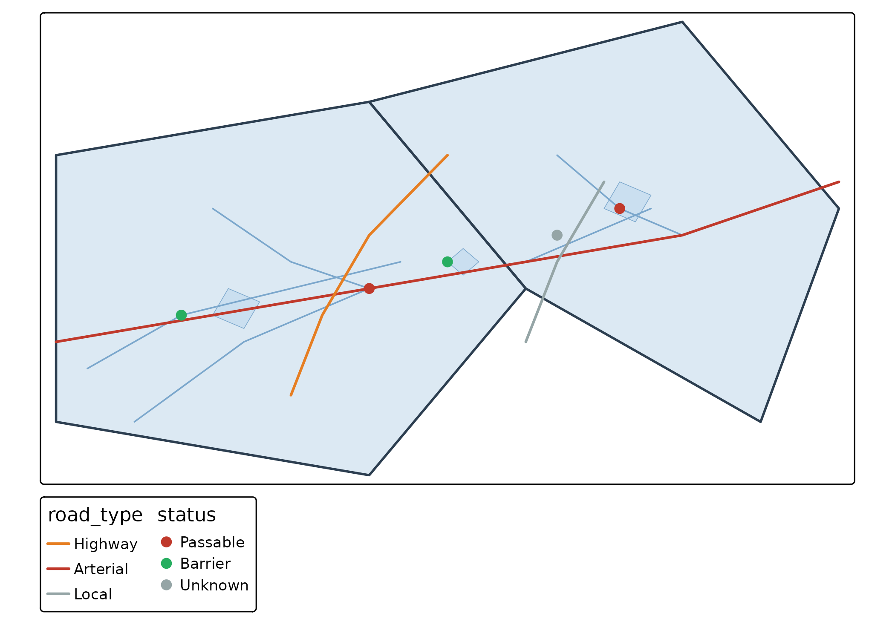

gq is a style management system for cartography. Define your map styles once in a JSON registry, then translate them to any rendering target — tmap, mapgl, leaflet, ggplot2. Change a color in one place and every map updates.
The problem
If you make maps in R and QGIS and the web, you’re maintaining the same colors, line weights, and classification breaks in multiple places. Change a stream color in QGIS? Now you need to update your tmap code, your leaflet code, and your MapLibre style. It doesn’t scale.
The solution
A canonical style registry that serves as the single source of truth:
QGIS Project (.qgs)
↓ gq_qgs_extract()
registry.json
↓ gq_tmap_style() / gq_mapgl_style()
tmap, mapgl, leaflet, ggplot2Load a registry
The registry is just JSON. Load it with
gq_registry_read():
library(gq)
reg_path <- system.file("examples", "demo_registry.json", package = "gq")
reg <- gq_registry_read(reg_path)
names(reg$layers)
#> [1] "watershed" "lake" "stream" "road" "crossing"Each layer has a type (polygon, line, point) and style properties:
reg$layers$lake
#> $type
#> [1] "polygon"
#>
#> $fill
#> $fill$color
#> [1] "#c6ddf0"
#>
#> $fill$opacity
#> [1] 0.85
#>
#>
#> $stroke
#> $stroke$color
#> [1] "#7ba7cc"
#>
#> $stroke$width
#> [1] 0.5Translate to tmap
gq_tmap_style() converts a registry layer to tmap v4
arguments — ready to pass directly to tm_polygons(),
tm_lines(), or tm_dots():
gq_tmap_style(reg$layers$lake)
#> $fill
#> [1] "#c6ddf0"
#>
#> $fill_alpha
#> [1] 0.85
#>
#> $col
#> [1] "#7ba7cc"
#>
#> $lwd
#> [1] 0.5
gq_tmap_style(reg$layers$stream)
#> $col
#> [1] "#7ba7cc"
#>
#> $lwd
#> [1] 1.2Build a map
gq ships with small demo datasets (watershed,
lake, stream, road,
crossing) for illustration. Here’s a full map styled
entirely from the registry:
library(tmap)
library(sf)
#> Linking to GEOS 3.12.1, GDAL 3.8.4, PROJ 9.4.0; sf_use_s2() is TRUE
# Load demo spatial data
data(watershed, lake, stream, road, crossing, package = "gq")
# Style everything from the registry — one source of truth
tm_shape(watershed) +
do.call(tm_polygons, gq_tmap_style(reg$layers$watershed)) +
tm_shape(lake) +
do.call(tm_polygons, gq_tmap_style(reg$layers$lake)) +
tm_shape(stream) +
do.call(tm_lines, gq_tmap_style(reg$layers$stream)) +
tm_shape(road) +
tm_lines(col = "grey50", lwd = 1.5) +
tm_shape(crossing) +
do.call(tm_dots, gq_tmap_style(reg$layers$crossing))
Every color, opacity, and line weight comes from reg —
not hard-coded in the plotting code.
Classified layers
Many layers use categorized symbology (road types, fish passage status). The registry stores per-class colors:
reg$layers$road$classification
#> $field
#> [1] "road_type"
#>
#> $classes
#> $classes$highway
#> $classes$highway$color
#> [1] "#c0392b"
#>
#> $classes$highway$width
#> [1] 2.5
#>
#> $classes$highway$label
#> [1] "Highway"
#>
#>
#> $classes$arterial
#> $classes$arterial$color
#> [1] "#e67e22"
#>
#> $classes$arterial$width
#> [1] 1.8
#>
#> $classes$arterial$label
#> [1] "Arterial"
#>
#>
#> $classes$local
#> $classes$local$color
#> [1] "#95a5a6"
#>
#> $classes$local$width
#> [1] 1
#>
#> $classes$local$label
#> [1] "Local"gq_tmap_classes() extracts this into a format ready for
tm_scale_categorical():
road_cls <- gq_tmap_classes(reg$layers$road)
road_cls
#> $field
#> [1] "road_type"
#>
#> $values
#> highway arterial local
#> "#c0392b" "#e67e22" "#95a5a6"
#>
#> $labels
#> [1] "Highway" "Arterial" "Local"
crossing_cls <- gq_tmap_classes(reg$layers$crossing)
tm_shape(watershed) +
do.call(tm_polygons, gq_tmap_style(reg$layers$watershed)) +
tm_shape(lake) +
do.call(tm_polygons, gq_tmap_style(reg$layers$lake)) +
tm_shape(stream) +
do.call(tm_lines, gq_tmap_style(reg$layers$stream)) +
tm_shape(road) +
tm_lines(
col = road_cls$field,
col.scale = tm_scale_categorical(
values = road_cls$values,
labels = road_cls$labels
),
lwd = 2
) +
tm_shape(crossing) +
tm_dots(
fill = crossing_cls$field,
fill.scale = tm_scale_categorical(
values = crossing_cls$values,
labels = crossing_cls$labels
),
size = 0.5
)
MapLibre GL output
The same registry translates to MapLibre GL paint properties for web maps:
gq_mapgl_style(reg$layers$lake)
#> $paint
#> $paint$`fill-color`
#> [1] "#c6ddf0"
#>
#> $paint$`fill-opacity`
#> [1] 0.85
#>
#> $paint$`fill-outline-color`
#> [1] "#7ba7cc"
#>
#>
#> $layer_type
#> [1] "fill"
gq_mapgl_style(reg$layers$stream)
#> $paint
#> $paint$`line-color`
#> [1] "#7ba7cc"
#>
#> $paint$`line-width`
#> [1] 1.2
#>
#>
#> $layout
#> list()
#>
#> $layer_type
#> [1] "line"For classified layers, gq_mapgl_classes() builds a
MapLibre match expression:
str(gq_mapgl_classes(reg$layers$road))
#> List of 9
#> $ : chr "match"
#> $ :List of 2
#> ..$ : chr "get"
#> ..$ : chr "road_type"
#> $ : chr "highway"
#> $ : chr "#c0392b"
#> $ : chr "arterial"
#> $ : chr "#e67e22"
#> $ : chr "local"
#> $ : chr "#95a5a6"
#> $ : chr "#888888"This expression goes directly into
mapgl::add_line_layer(paint = list("line-color" = expr)).
Extract from QGIS
If you have an existing QGIS project, gq_qgs_extract()
parses the .qgs XML and builds a registry from it — no PyQGIS
needed:
qgs_path <- system.file("examples", "mini_project.qgs", package = "gq")
extracted <- gq_qgs_extract(qgs_path)
names(extracted$layers)
#> [1] "lakes" "streams" "crossings" "roads"
extracted$layers$lakes
#> $type
#> [1] "polygon"
#>
#> $source_layer
#> [1] "lakes"
#>
#> $fill
#> $fill$color
#> [1] "#c6ddf0"
#>
#> $fill$opacity
#> [1] 0.851
#>
#>
#> $stroke
#> $stroke$color
#> [1] "#7ba7cc"
#>
#> $stroke$width
#> [1] 0.5Write it out as your registry:
jsonlite::write_json(extracted, "registry.json", pretty = TRUE, auto_unbox = TRUE)One source of truth
The workflow is:
- Design styles in QGIS (the best visual tool for cartography)
- Extract with
gq_qgs_extract()→registry.json - In R scripts:
gq_tmap_style()for static maps,gq_mapgl_style()for web - Change a color in the registry → every map updates
No more copy-pasting hex codes across files.